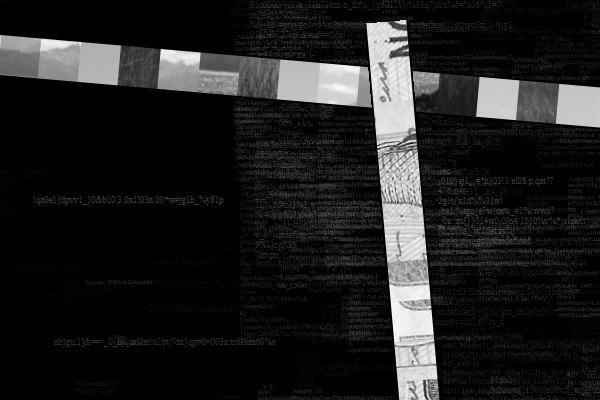
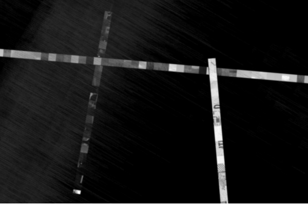

Vuelo Nocturno Año: 2015 Tipo: Sitio web - Net art Autor: José Casanova  Imágenes Adicionales  Notas Expuesta en "The WRONG Biennal" (2017) como parte de la colección Displacements Referencias Displacements Collection ← Volver a Obras